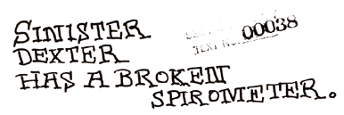

A SERMON ON ETHICS AND LOVE
One day Mal-2 asked the messenger spirit Saint Gulik to approach the Goddess and request Her presence for some desperate advice. Shortly afterwards the radio came on by itself, and an ethereal female Voice said YES?
"O! Eris! Blessed Mother of Man! Queen of Chaos! Daughter of Discord! Concubine of Confusion! O! Exquisite Lady, I beseech You to lift a heavy burden from my heart!"
WHAT BOTHERS YOU, MAL? YOU DON'T SOUND WELL.
"I am filled with fear and tormented with terrible visions of pain. Everywhere people are hurting one another, the planet is rampant with injustices, whole societies plunder groups of their own people, mothers imprison sons, children perish while siblings war. O, woe."
WHAT IS THE MATTER WITH THAT, IF IT IS WHAT YOU WANT TO DO?
"But nobody wants it! Everybody hates it."
OH. WELL, THEN STOP.
At which moment She turned herself into an aspirin commercial and left The Polyfounder stranded alone with her species.
